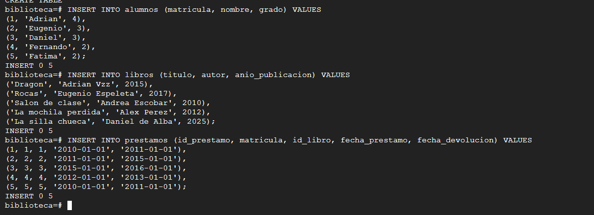
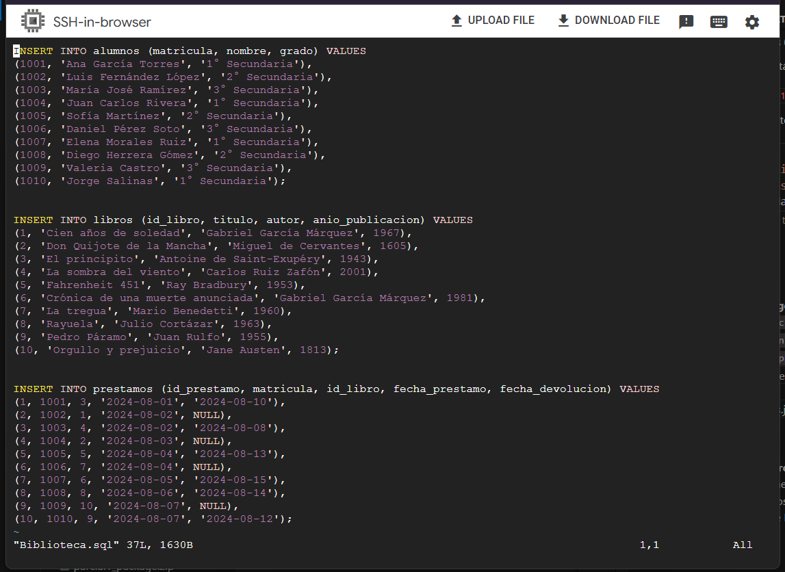
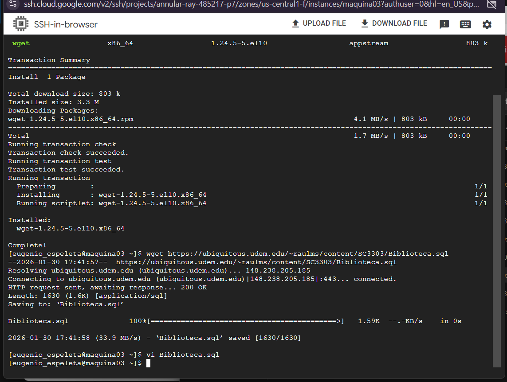

🎯 Objetivo
Aprender a descargar archivos SQL desde fuentes externas (páginas web, repositorios, servidores) e importarlos exitosamente en bases de datos PostgreSQL y MariaDB. Se enfatiza la validación de archivos, manejo de errores de importación y verificación de integridad de datos después de la carga.
💡 Conceptos Clave
Archivo SQL
Archivo de texto que contiene sentencias SQL (DDL, DML) para crear, modificar y poblar estructuras de base de datos.
Importación de Datos
Proceso de carga de datos desde archivos externos hacia una base de datos. Incluye validación y manejo de conflictos.
wget / curl
Herramientas de lÃnea de comandos para descargar archivos desde URLs. wget es simple, curl es más versátil.
Integridad de Datos
Verificación de que los datos importados no estén corruptos, sean consistentes y cumplan con restricciones.
Transacciones SQL
Conjunto de sentencias SQL que se ejecutan como una unidad atómica. Si falla una, todas se revierten (ROLLBACK).
Manejo de Errores
Identificación y solución de problemas durante la importación (duplicados, restricciones, sintaxis incorrecta).
✓ Evidencia de Aprendizaje
Descarga de Archivo SQL
Descargar exitosamente un archivo SQL desde una fuente externa usando wget o curl.
Validación de Archivo
Verificar integridad, formato correcto y contenido del archivo SQL descargado.
Importación a PostgreSQL
Ejecutar importación de archivo SQL a base de datos PostgreSQL usando psql.
Verificación de Datos
Ejecutar consultas para verificar que todos los datos se importaron correctamente.
Manejo de Conflictos
Resolver errores de importación (duplicados, restricciones, incompatibilidades).
📸 Evidencia de Implementación
Paso 1: Descarga del Archivo SQL
Descarga del archivo SQL desde una página externa usando wget o curl. Se verificó la integridad y tamaño del archivo:

Figura 1: Descarga exitosa del archivo SQL desde URL externa
Paso 2: Inspección del Archivo
Revisión del contenido del archivo SQL para verificar estructura, DDL y DML correctos:
# Ver primeras lÃneas del archivo
head -50 archivo.sql
# Ver información del archivo
file archivo.sql
ls -lh archivo.sql
# Contar número de lÃneas
wc -l archivo.sql
# Buscar palabras clave
grep -i "CREATE TABLE" archivo.sql
grep -i "INSERT INTO" archivo.sqlPaso 3: Proceso de Importación
Ejecución del archivo SQL en PostgreSQL usando el cliente psql:

Figura 2: Ejecución de importación del archivo SQL en PostgreSQL
Paso 4: Verificación de Tablas Creadas
Verificación de que todas las tablas se crearon correctamente en la base de datos:

Figura 3: Listado de tablas creadas usando \dt en psql
Paso 5: Validación de Datos Importados
Ejecución de consultas para validar que los datos se importaron correctamente:

Figura 4: Verificación de datos en tablas importadas
Paso 6: Consultas de Verificación
Ejecución de consultas complejas para asegurar integridad referencial y coherencia:

Figura 5: Consultas JOIN para verificar integridad de relaciones
Comandos Útiles para Importación
-- IMPORTACIÓN EN PostgreSQL
psql -U usuario -d base_datos -f archivo.sql
-- IMPORTACIÓN EN MariaDB
mysql -u usuario -p base_datos < archivo.sql
-- Descargar archivo SQL con wget
wget https://ejemplo.com/base_datos.sql
-- Descargar con curl
curl -O https://ejemplo.com/base_datos.sql
-- Importación con transacción (PostgreSQL)
psql -U usuario -d base_datos << EOF
BEGIN;
\i archivo.sql
COMMIT;
EOF
-- Verificar tablas importadas (PostgreSQL)
psql -U usuario -d base_datos -c "\dt"
-- Verificar tablas importadas (MariaDB)
mysql -u usuario -p base_datos -e "SHOW TABLES;"
-- Contar registros en tabla
SELECT COUNT(*) FROM nombre_tabla;
-- Verificar relaciones entre tablas
SELECT * FROM tabla1
JOIN tabla2 ON tabla1.id = tabla2.tabla1_id;📋 Conclusiones
📚 Aprendizajes Principales
He aprendido a descargar archivos SQL desde fuentes externas, validar su integridad, importarlos en PostgreSQL y MariaDB, y verificar que los datos se carguen correctamente. Esto es crÃtico para trabajar con bases de datos en ambientes reales.
âš ï¸ DesafÃos Encontrados
Los principales desafÃos fueron manejar errores de importación por incompatibilidades de sintaxis, resolver conflictos de datos duplicados, y asegurar que todas las relaciones (FOREIGN KEY) se crearan correctamente.
🎯 Mejoras Futuras
Implementar scripts automáticos de importación, crear backups antes de importar, usar transacciones para rollback en caso de error, y explorar herramientas como pg_restore para archivos en formato binario.